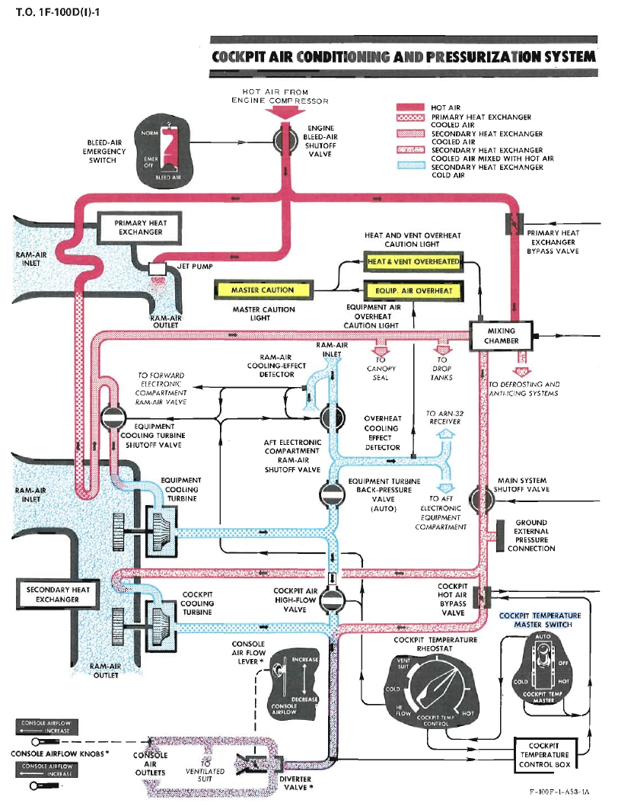
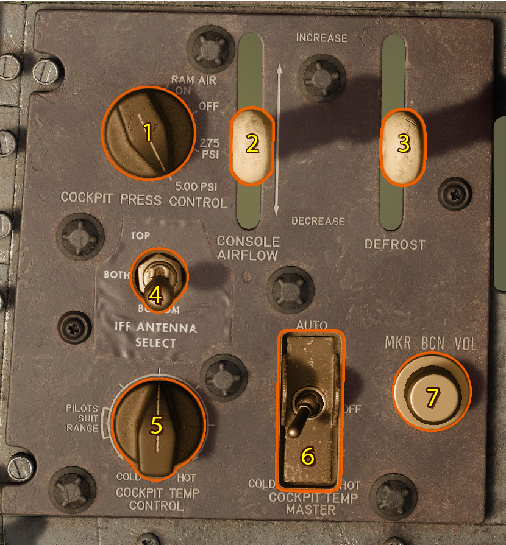
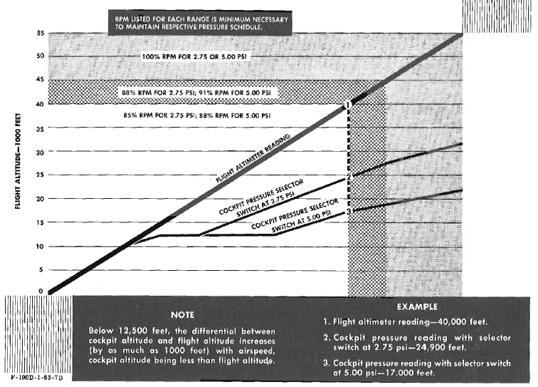
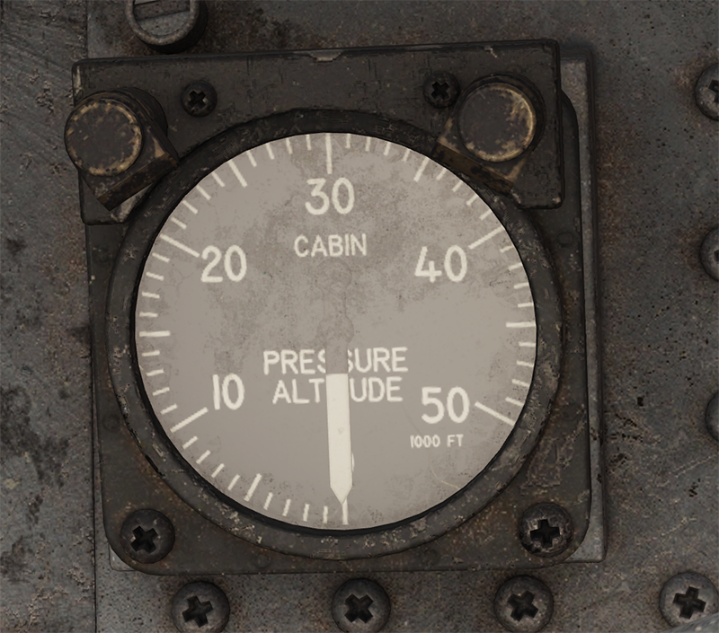

Environmental Control System

Introduction
The Environmental Control System is everything that keeps the cabin comfortable and pressurized for the pilot.
Controls

- Cockpit Pressure Selector Switch
- Console Airflow Lever
- Canopy and Windshield Defrost Lever
- IFF Antenna Selector Switch
- Cockpit Temperature Rheostat
- Cockpit Temperature Master Switch
- Marker Beacon Volume Knob INOP
Cockpit Pressure Selector Switch
The Cockpit Pressure Selector Switch has four positions. RAM AIR ON, OFF, 2.75 PSI and 5.00 PSI.
When the selector is set to 2.75 psi or 5 psi, the main system shutoff valve opens to direct air to some cockpit air outlets and the emergency ram air valve closes.
When the selector is set to RAM AIR ON, the main system shutoff valve closes and the emergency ram air valve opens to admit ram air to the cockpit.
Note
Selecting the Cockpit Pressure Selector Switch to RAM AIR ON will depressurize the cockpit.
Moving the pressure selector switch to OFF closes the main system shutoff valve, the emergency ram-air valve, and the cockpit dump valve, and the cockpit pressure regulator is set to 2.75 psi position.
Note
The OFF position is also used to prevent rapid decompression of the cockpit.
Cockpit Pressure Schedule
Reference image below for how pressure scheduling works.

Console Airflow Lever
The Console Airflow Lever controls the flow of air to the outlets along the console and to the outlet behind the seat. Moving the lever forward increases the airflow while moving it back reduces the airflow.
Canopy and Windshield Defrost Lever
Similarly to the Console Airflow Lever, the Canopy and Windshield Defrost Lever controls the distribution of heat to the canopy and windshield.
IFF Antenna Selector Switch
The IFF Antenna Selector Switch has three position, TOP/BOTH/BOTTOM.
When the switch is positioned in the TOP position, it will only utilize the upper antenna.
When the switch is positioned in the BOTH position, it will utilize both the upper and lower antenna.
When the switch is positioned in the BOTTOM position, it will only utilize the lower antenna.
Reference ARN-72 Tacan for more information.
Cockpit Temperature Rheostat
The Cockpit Temperature Rheostat will change the temperature of the cockpit only when the Cockpit Temperature Master Switch is set to AUTO. It also has a small range that will control the pilots suit temperature.
Cockpit Temperature Master Switch
The Cockpit Temperature Master Switch has four positions, AUTO/OFF/COLD/HOT
Setting this switch to either position except for OFF will control the temperature of the cockpit.
Cockpit Pressure Altitude Indicator
This gauge will tell you what the current cockpit pressure is.
